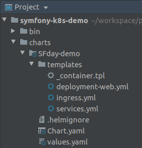
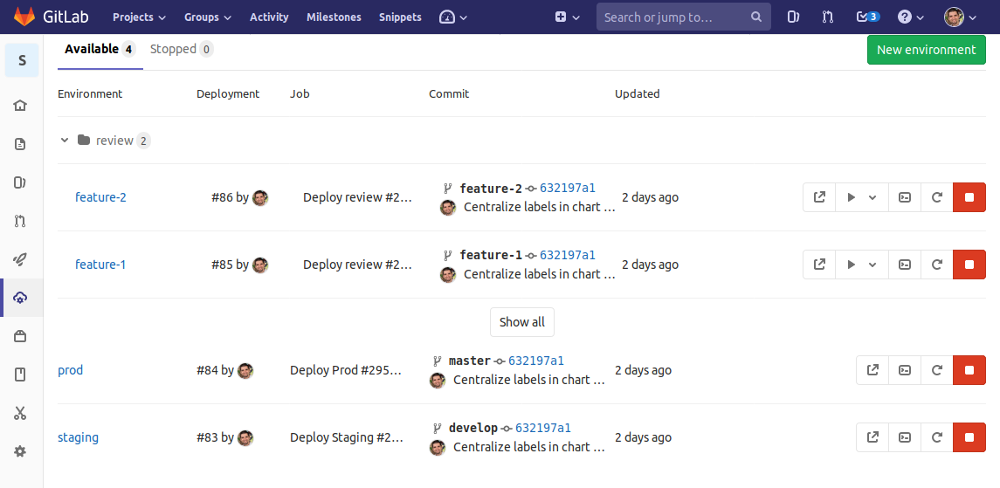

Who am I?
- Alessandro Lai
-
Project lead @

- @Jean85
- @AlessandroLai
- PHP UG Milan Coordinator
- PHP-FIG Secretary
Kubernetes: where it came from
Inspired by Google's Borg project (C++) https://en.wikipedia.org/wiki/Kubernetes#History
Kubernetes: basic structure
-
Master node(s)
etcd, API server, scheduler, controller manager
-
Worker nodes
kubelet, Kube-proxy & container runtime
-
kubectlInstallation: https://kubernetes.io/docs/tasks/tools/install-kubectl/
Main resources
| Pod | |||
|
ConfigMap
Secret
|
Deployment |
|
|
|
Service |
CronJob |
||
|
Ingress |
Ingress
apiVersion: extensions/v1beta1
kind: Ingress
metadata:
name: my-sf-demo
spec:
rules:
- host: my-sf-demo.alessandrolai.dev
http:
paths:
- path: /
backend:
serviceName: nginx
servicePort: 80
tls:
- hosts:
- my-sf-demo.alessandrolai.dev
Service
apiVersion: v1
kind: Service
metadata:
name: nginx
spec:
ports:
- port: 80
selector:
app: my-sf-demo
tier: php
Deployment
apiVersion: apps/v1
kind: Deployment
metadata:
name: php
spec:
replicas: 2
template:
spec:
containers:
- image: docker.facile.it/facile/my-sf-demo-nginx:prod
name: nginx
ports:
- containerPort: 80
- image: docker.facile.it/facile/my-sf-demo-php:prod
name: php
env:
- name: DATABASE_PASSWORD
valueFrom:
secretKeyRef:
name: my-database
key: passwordCron
apiVersion: batch/v1beta1
kind: CronJob
metadata:
name: prod-cron-hello-world
spec:
schedule: "0 23 * * *"
suspend: false
successfulJobsHistoryLimit: 3
jobTemplate:
template:
spec:
template:
spec:
containers:
- image: docker.facile.it/facile/my-sf-demo-nginx:prod
name: nginx
ports:
- containerPort: 80
- image: docker.facile.it/facile/my-sf-demo-php:prod
name: php
env:
- name: DATABASE_PASSWORD
valueFrom:
secretKeyRef:
name: my-database
key: passwordObjective: CI/CD pipeline

Deploy (?)
Deploy:
stage: Deploy
script:
- kubectl set image deployment/very-simple-app php=$PHP_IMAGE
- kubectl rollout status deployment/very-simple-app
only:
- masterResult:
$ kubectl set image deployment/very-simple-app php="${!PHP_IMAGE_VAR}"
deployment "very-simple-app" images updated
$ kubectl rollout status deployment/very-simple-app
Waiting for rollout to finish: 1 old replicas are pending termination...
Waiting for rollout to finish: 1 old replicas are pending termination...
Waiting for rollout to finish: 5 of 6 updated replicas are available...
deployment "very-simple-app" successfully rolled outWhat Helm does:
- Templating
- Package manager (charts)
- Deployer
Demo!
Chart folder
Template example
{{- $host := $.Values.app.url | trimPrefix "https://" | quote -}}
apiVersion: extensions/v1beta1
kind: Ingress
metadata:
name: {{ $.Values.app.name }}-ingress
spec:
rules:
- host: {{ $host }}
http:
paths:
- path: /
backend:
serviceName: {{ $.Values.nginx.name }}
servicePort: {{ $.Values.nginx.port }}
tls:
- hosts:
- {{ $host }}
values.yaml
app:
name: sfday-demo
env: ~
url: ~
nginx:
port: 80
name: nginx
image: ~
resources:
requests:
memory: 16M
cpu: 10m
limits:
memory: 32M
cpu: 50m
php:
name: php
image: ~
replicas: 2
resources:
requests:
memory: 63M
cpu: 25m
limits:
memory: 128M
cpu: 250m
Local dump/test
helm-template: helm-template-prod helm-template-staging
helm-template-prod:
rm -rf k8s/prod/*
@docker-compose run --rm helm /bin/sh -c "
helm template /var/www/sfday/charts/SFday-demo/ \
--output-dir /var/www/sfday/k8s/prod \
--set app.env=prod \
--set app.tag=prod-abcd1234 \
--set app.url=https://prod.example.com/ \
--set gitlabRegistrySecret=secret-sfday-prod \
--set php.image=registry.com/myproject/php \
--set nginx.image=registry.com/myproject/nginx"
helm-template-staging:
rm -rf k8s/staging/*
@docker-compose run --rm helm /bin/sh -c "
helm template /var/www/sfday/charts/SFday-demo/ \
--output-dir /var/www/sfday/k8s/staging \
--set app.env=staging \
--set app.tag=staging-abcd1234 \
--set app.url=https://staging.example.com/ \
--set gitlabRegistrySecret=secret-sfday-staging \
--set php.image=registry.com/myproject/php \
--set nginx.image=registry.com/myproject/nginx"Helm in action
.helm_job:
image: $CI_REGISTRY_IMAGE/helm:2.14.3
before_script: []
cache: {}
services: []
.deploy_template:
stage: Deploy
extends: .helm_job
script:
- >
helm init \
--upgrade \
--wait \
--tiller-namespace="$KUBE_NAMESPACE"
- >
helm upgrade \
--install \
--atomic \
--namespace="$KUBE_NAMESPACE" \
--tiller-namespace="$KUBE_NAMESPACE" \
--set app.env="$CI_ENVIRONMENT_SLUG" \
--set app.tag="$APP_ENV-$CI_COMMIT_SHORT_SHA" \
--set app.url="$CI_ENVIRONMENT_URL" \
--set gitlabRegistrySecret="gitlab-docker-registry" \
--set php.image=$PHP_IMAGE \
--set nginx.image=$NGINX_IMAGE \
--set dockerRegistry="$CI_REGISTRY_IMAGE" \
"sfday-demo-$CI_ENVIRONMENT_SLUG" \
charts/SFday-demo/
...and now, dynamic review environments!
Deploy review:
extends:
- .deploy_template
- .review_template
variables:
APP_ENV: review
environment:
url: http://$CI_ENVIRONMENT_SLUG.sfday.demo/
on_stop: Stop review
Stop review:
stage: Stop
when: manual
extends:
- .review_template
- .helm_job
environment:
action: stop
script:
- >
helm delete \
--tiller-namespace="$KUBE_NAMESPACE" \
"sfday-demo-$CI_ENVIRONMENT_NAME"
Questions?
References
- Demo repository with CI/CD pipelines
-
kubectl installation
(remember to install autocomplete too!) - K8s docs
- K8s API reference
- Helm docs
- Sprig (Go Template) docs
- GitLab CI docs
Please rate my talk on the Codemotion app
Contacts
-
https://alessandrolai.dev
(slides and previous talks are here!) - alessandro.lai85@gmail.com
- alessandro.lai@facile.it (we are hiring!)
- @Jean85
- @AlessandroLai